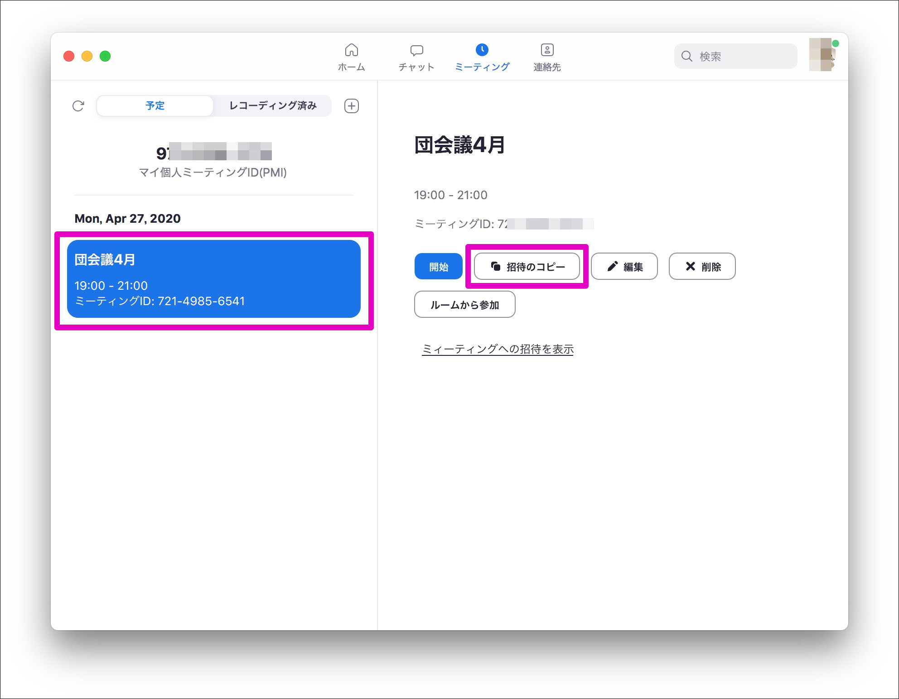

Zoom使い方ガイド パソコン版
Zoomの無料プランを使ってオンラインミーティングを開催してみましょう。
※無料プランはグループミーティングが40分に制限されています。
条件
- インターネットに接続されていること
- パソコンまたはタブレット、スマートフォン
- 本体付属のカメラとマイク(もしくは外部接続のカメラ、マイクも可)
Zoomのアプリをインストールする
Zoomのアプリをインストールしておくと便利なので、まずはお使いのデバイスにアプリをインストールしましょう。
それぞれお使いのデバイスにあったZoomアプリケーションをインストールしてください。
使い方ガイドについて
このページではパソコン版アプリで解説しています。
を参照してください。
ミーティングに参加する
招待リンクからミーティングに参加

インストールが完了するとこのような画面が起動します。(自動的に起動しない場合は、手動で起動させてください)
主催者から届いた招待メール(または各種チャットアプリ)を開き、Zoomミーティングに参加すると書かれたリンクをクリックします。

webブラウザが起動し、Zoomアプリら開く確認画面が現れますので zoom.usを開く をクリックします。
コンピューターオーディオに参加するをクリックし、主催者から参加の承認が出るまで待ちます。以上でミーティングへ参加できます。
リンクから入れない場合は、会議IDとパスワードを手入力することで会議へ参加できますので以下の方法を参照してください。
手動でミーティングへ参加する方法

会議IDとパスワードを手入力してミーティングに参加する場合はZoomアプリを起動し、ミーティングに参加をクリックします。
会議IDと名前の入力
 主催者から届いたミーティング案内に書いてある
主催者から届いたミーティング案内に書いてある 会議ID (11桁の数字)を入力します。(ハイフンなしで入力してもOKです)
他の参加者があなたを識別しやすくなるように お名前 を入力し、参加をクリックします。
パスワード

案内に書いてあるパスワードを入力し 参加 をクリックします。主催者から参加の承認がされると、ミーティングへ参加できます。
ミーティングを開催する
今すぐミーティングを開催する
ミーティングの開始
 Zoomアプリを起動し
Zoomアプリを起動し 新規ミーティング をクリックします。
※ zoomアプリにログインしていない場合はログインが必要です。

コンピューターオーディオで参加をクリックすると会議の開催が完了します。
参加者の招待
画面下部にある 参加者 アイコンをクリックすると、画面右に参加者ウィンドが現れます。

招待ボタンをクリックします。
 このような画面に遷移しますので上部の
このような画面に遷移しますので上部の メール タブを開きます。各ボタン(リンク)では以下の方法で参加者へ招待を送ることができるので使い分けてください。
- Gmail
- お使いのGmailアカウントから直接招待メールを送信すできます必要事項が記載された状態で新規メールが作成されるので、送信先を入力するだけで済むので便利です。
- URLのコピー
https://us04web.zoom.us/j/7**********?pwd=SGNJZFRjd3krdVMvSlo3elA4U25EQT09のようなリンクだけがクリップボードにコピーされます。メールやメッセージ、チャットなどに貼り付けて参加者に案内を送信します。
- 招待のコピー
- 以下のような招待文がクリップボードにコピーされます。メールやメッセージ、チャットなどに貼り付けて参加者に案内を送信します。
Zoomミーティングに参加する
https://us04web.zoom.us/j/7****?pwd=SGNJZFRjd3krdVMvSlo3elA4U25EQT09
ミーティングID: 713 6432 2314
パスワード: 8zqAAu
参加者の承認

参加者がミーティングへの参加リクエストがあった場合、主催者として受け入れて続きをします。画面右の参加者ウィンドに X待機中 と表示が現れます。
主催者は氏名等を確認し、許可するをクリックすると参加者がミーティングへ参加できます。氏名で確認するしかできないため、坂者には判別しやすい名前を付けてもらうようにしましょう。
削除するをクリックするとミーティングへの参加を拒否できます。
ミーティングを予定する
会議等が予定されている場合はミーティングを予約しておくとスムーズに進められるので便利です。Zoomアプリから「次の団委員会の開催予約」をしてみましょう。
 Zoomアプリから
Zoomアプリから スケジュール をクリックします。
 ミーティングの設定画面が出てきます。
ミーティングの設定画面が出てきます。
- トピック
- 会議の名称などを入力します
- 日付
- 会議の日時を設定します
- パスワード
- 必ず設定しましょう
- ビデオ
- 参加形態によって設定を変更してください
- オーディオ
- 参加形態によって設定を変更してください
- カレンダー
- ご使用の環境で選択してください
ここまで設定できたら スケジュール をクリックします。これでミーティングの予約が完了しました。
Zoomアプリに戻り、ミーティングタブをクリックします。すると先程予約したミーティングが設定されているのが確認できます。

予約したミーティングをクリックすると詳細が見られます。招待のコピーをクリックすると招待に必要な文面がクリップボードにコピーされるので、メールやチャットで参加者に周知します。
当日は会議が自動的に始まるわけではないので、主催者も参加者と同じようにZoomにログインし、参加者の受け入れ作業をする必要があります。